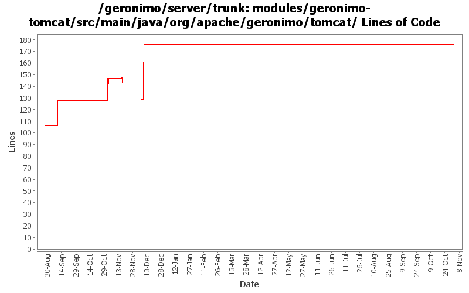

[root]/modules/geronimo-tomcat/src/main/java/org/apache/geronimo/tomcat
 cluster
(0 files, 0 lines)
cluster
(0 files, 0 lines)
 connector
(0 files, 0 lines)
connector
(0 files, 0 lines)
 interceptor
(0 files, 0 lines)
interceptor
(0 files, 0 lines)
 listener
(0 files, 0 lines)
listener
(0 files, 0 lines)
 realm
(0 files, 0 lines)
realm
(0 files, 0 lines)
 util
(0 files, 0 lines)
util
(0 files, 0 lines)
 valve
(0 files, 0 lines)
valve
(0 files, 0 lines)

| Author | Changes | Lines of Code | Lines per Change |
|---|---|---|---|
| Totals | 106 (100.0%) | 237 (100.0%) | 2.2 |
| kevan | 43 (40.6%) | 113 (47.7%) | 2.6 |
| jlaskowski | 5 (4.7%) | 30 (12.7%) | 6.0 |
| pmcmahan | 8 (7.5%) | 28 (11.8%) | 3.5 |
| akulshreshtha | 7 (6.6%) | 27 (11.4%) | 3.8 |
| jgenender | 10 (9.4%) | 23 (9.7%) | 2.3 |
| vamsic007 | 2 (1.9%) | 12 (5.1%) | 6.0 |
| djencks | 5 (4.7%) | 3 (1.3%) | 0.6 |
| hogstrom | 1 (0.9%) | 1 (0.4%) | 1.0 |
| prasad | 23 (21.7%) | 0 (0.0%) | 0.0 |
| jdillon | 2 (1.9%) | 0 (0.0%) | 0.0 |
GERONIMO-3565. Modules distributed amongst framework/modules and plugins
0 lines of code changed in 23 files:
GERONIMO-2537 Some files still have old license headers. Update with new license headers. Also, some files were still mising headers
75 lines of code changed in 5 files:
GERONIMO-2641 Add license headers to files. Thanks Jarek!
32 lines of code changed in 4 files:
GERONIMO-2628 - upgrade to tomcat 6.0.2 beta
changes:
* modules/geronimo-tomcat
** add repository http://people.apache.org/~pmcmahan/maven2/ to pom
*** this will be removed when tomcat publishes v6 artifacts
** update pom to use tomcat 6.0.2 beta jars
** remove outdated clustering (o.a.g.tomcat.cluster)
** update resources in src/main/resources/META-INF/geronimo-tomcat/var/catalina
** update dependencies in src/main/resources/META-INF/geronimo-dependency.xml
** update test cases
** disabled a test case that fails intermittently
* modules/geronimo-tomcat-builder
** remove outdated references to clustering support
** update test cases
* configs/tomcat
** add repository http://people.apache.org/~pmcmahan/maven2/ to pom
*** this will be removed when tomcat publishes v6 artifacts
* configs/webconsole-tomcat
** remove dependencies on jasper-runtime from pom.xml and plan.xml
* configs/jee5-specs
** use servlet 2.5, jsp 2.1, el 1.0, annotation 1.0
* configs/tomcat-deployer
** update pom.xml to use new web25-builder
* assemblies/geronimo-tomcat-j2ee
** rename to geronimo-tomcat-jee
* test cases
** add new unit test for servlet 2.5 to geronimo-tomcat
* remove unnecessary reference to jasper-runtime from poms using jspc-maven-plugin
** console
** demo
** ca-helper
** jsp-examples
** ldap-demo
** remote-deploy
** uddi-server
** welcome
** magic GBall
28 lines of code changed in 8 files:
GERONIMO-2537 Update the src headers in server/trunk/modules to be compliant with the new ASF src header and copyright policy (http://www.apache.org/legal/src-headers.html). I also did some cleanup of the src headers and tried to make them all a consistent format
6 lines of code changed in 34 files:
GERONIMO-2491 Possible solution for Hibernate problem. Use the same context for connection tracking for all includes/dispatches in a servlet request.
3 lines of code changed in 1 file:
Partial fix for GERONIMO-2537 All Geronimo source files must be brought in line with the new ASF source header and copyright notice policy
The modules directory is supposed to be migrated. There're some issues with some files, but they'll be handled manually
30 lines of code changed in 5 files:
GERONIMO-2348 Tomcat ConnectorGBean does not handle attribute values properly
9 lines of code changed in 1 file:
GERONIMO-2343 tomcat does not use maxPostSize set in config.xml
3 lines of code changed in 1 file:
Geronimo-2526 Set J2EEApplication and J2EEServer for WebModule and hence servlets
24 lines of code changed in 4 files:
GERONIMO-2434 Fixed temporarily, see GERONIMO 2500
1 lines of code changed in 1 file:
Fixed badly named getter for 'scheme' attribute in tomcat TomcatWebConnector.
1 lines of code changed in 1 file:
Fixed badly named getter for 'scheme' attribute in tomcat ConnectorGBean.
1 lines of code changed in 1 file:
GERONIMO-2492 first steps, make the WebServiceBuilder a little more flexible
0 lines of code changed in 4 files:
GERONIMO-2329 updated web connectors to provide fully qualified host names to support remote deploy
1 lines of code changed in 1 file:
GERONIMO-2390 - add 2 more missing attributes
23 lines of code changed in 2 files:
GERONIMO-2390 - add missing attributes to the connectors
0 lines of code changed in 8 files:
Use logging instead of System.out and printStackTrace
0 lines of code changed in 2 files: